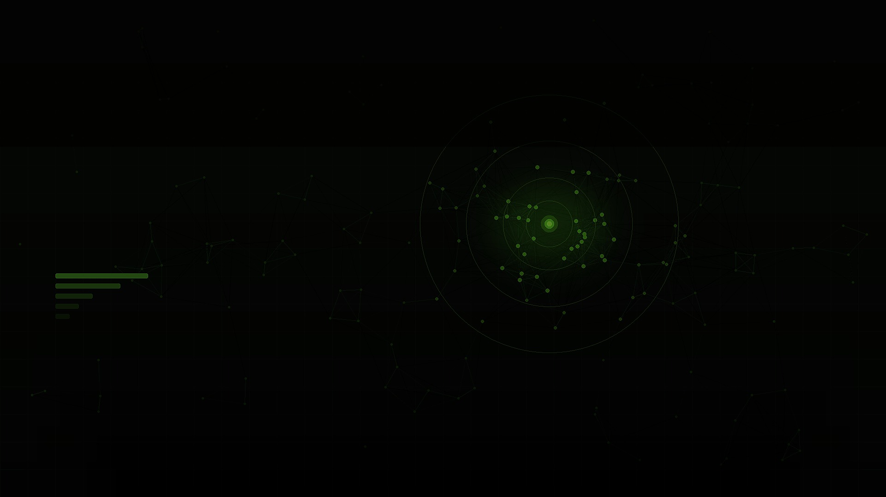
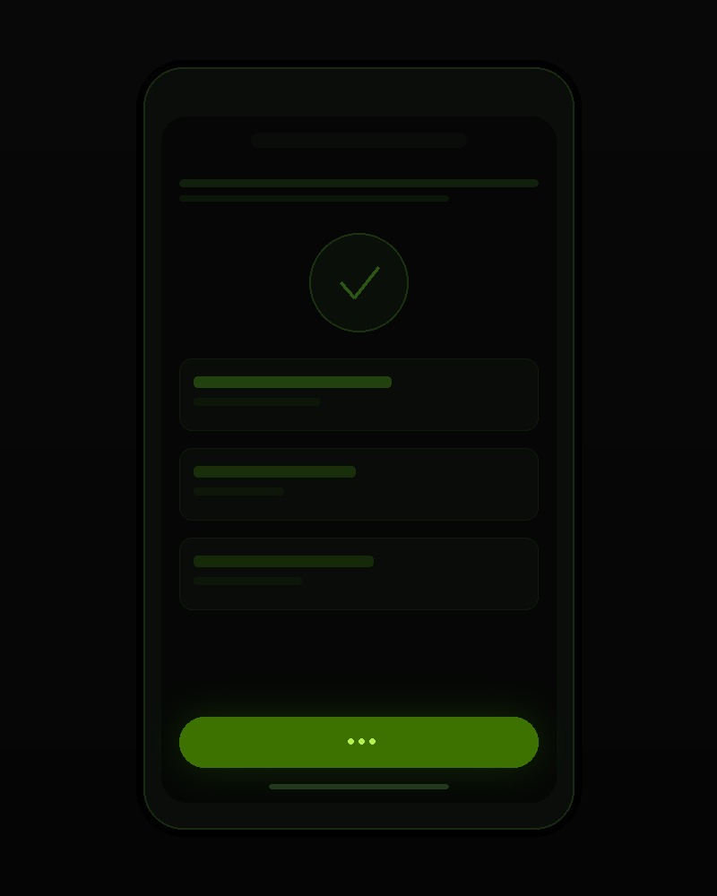
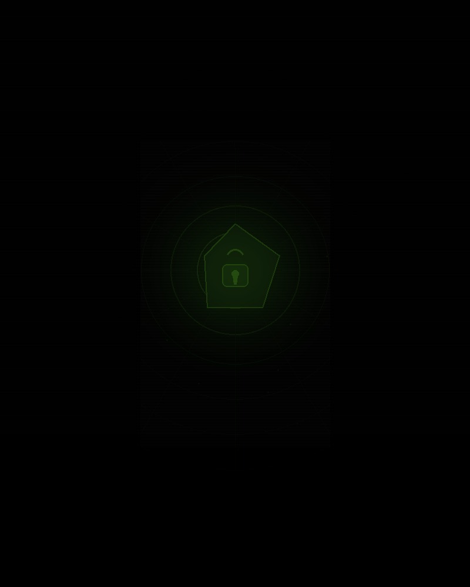

Designing a frictionless authentication system for modern privacy‑first applications.
In mobile ecosystems, friction kills retention. Traditional onboarding introduces cognitive load before the user experiences any value.
Research consistently shows that every additional step in an onboarding flow reduces conversion by 10–20%. For a travel app relying on spontaneous discovery, this cost is catastrophic.
Travelguidehub removes authentication entirely, replacing persistent accounts with anonymous device-bound identities — transparent to the user, compliant by design.

"The best authentication experience is the one users never notice."
Authentication has evolved from shared secrets to contextual, ambient systems that don't require user action at all.
Instead of storing personal accounts, the application generates an anonymous, salted and irreversible identity scoped to the current installation.
Generate a temporary installation-based identity using the device's unique hardware token, scoped to the current app installation.
The identity changes after reinstall, preventing persistent cross-session tracking and aligning with GDPR minimization principles.
No emails, passwords or personal data are ever stored or transmitted. The hash is the identity.
// Zero Login — identity generation
const raw = deviceId + Date.now();
const hashedId =
sha256(raw).slice(0, 16);
// Result: "a3f1b9c0e2d47812" — anonymous, ephemeralCross-installation tracking is impossible by architecture, not only by policy. Even Travelguidehub's own servers cannot correlate two sessions from the same device after reinstall.

No passwords means no credential stuffing, no phishing pages and dramatically reduced risk exposure.
The architecture embraces minimization: collect less, protect more. When there's nothing to steal, there's nothing to breach.
The architecture embraces minimization: collect less, protect more.
Zero Login replaces password-based trust with multi-layered contextual signals — each independently meaningless, powerful in combination.
Installation-scoped anonymous hash. Regenerated on reinstall, ephemeral by design.
Geographic and temporal signals. Adds environmental trust without identifying the user.
Usage patterns and interaction entropy. Implicit, passive, impossible to phish.
SHA-256 one-way hash as identity anchor. No reversal, no correlation, no recovery.
Zero-login systems represent a broader shift: identity becomes contextual, temporary and ambient. The login screen disappears not because we removed a feature — but because identity stops requiring explicit expression.
As device biometrics mature and behavioral cryptography becomes mainstream, the concept of "proving who you are" will feel as archaic as typing an IP address to visit a website.
The next frontier is anticipatory identity: systems that model trust progressively over session time, elevating permissions silently as confidence grows — without ever asking the user to act.
FIDO2/WebAuthn adoption reaches critical mass on iOS, Android and web.
Anonymous device-bound identities. No credentials, full GDPR compliance.
Trust levels derived from interaction entropy and temporal patterns, not explicit auth.
Identity is contextual, distributed and invisible. The login concept no longer exists.
"Zero Login is not a feature. It is a philosophical stance: identity should serve the user, not the other way around."